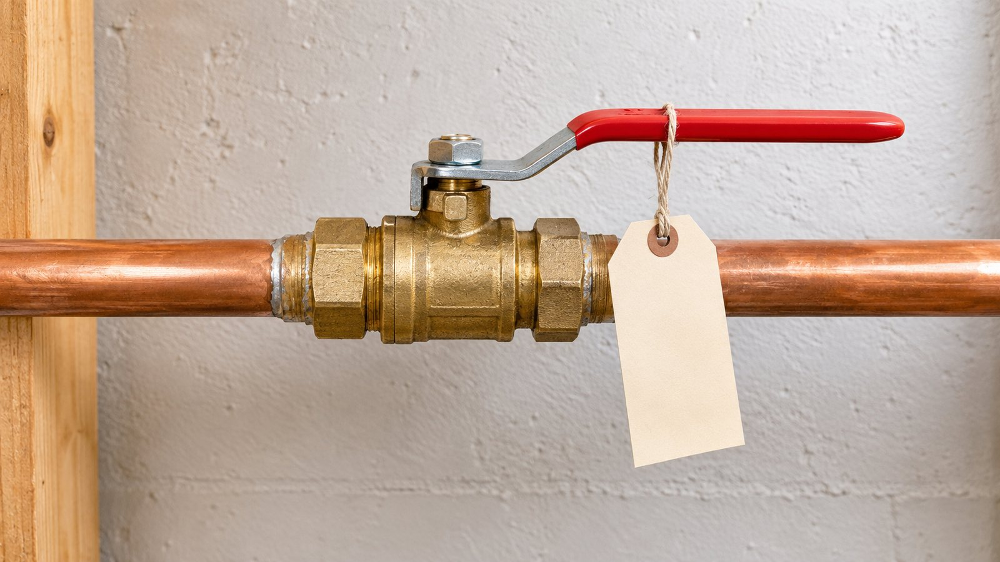
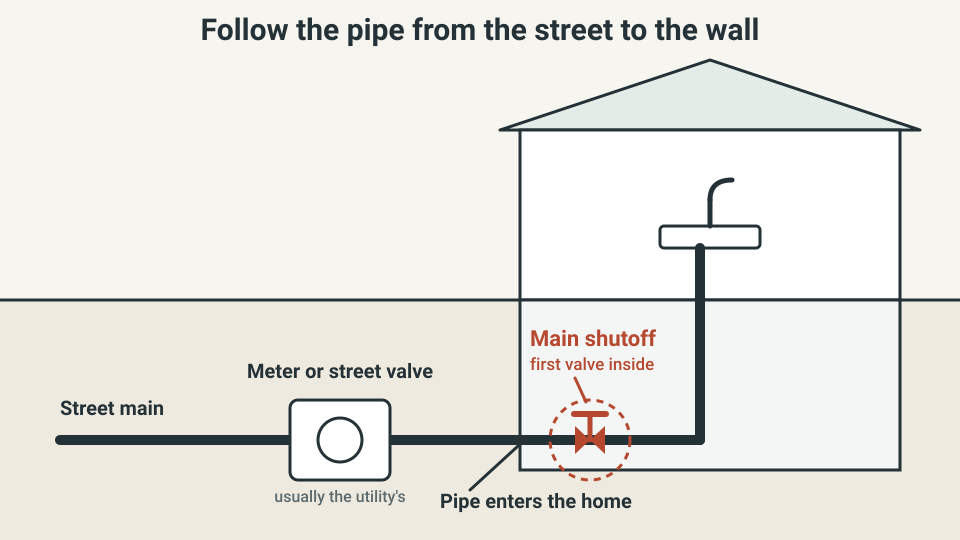
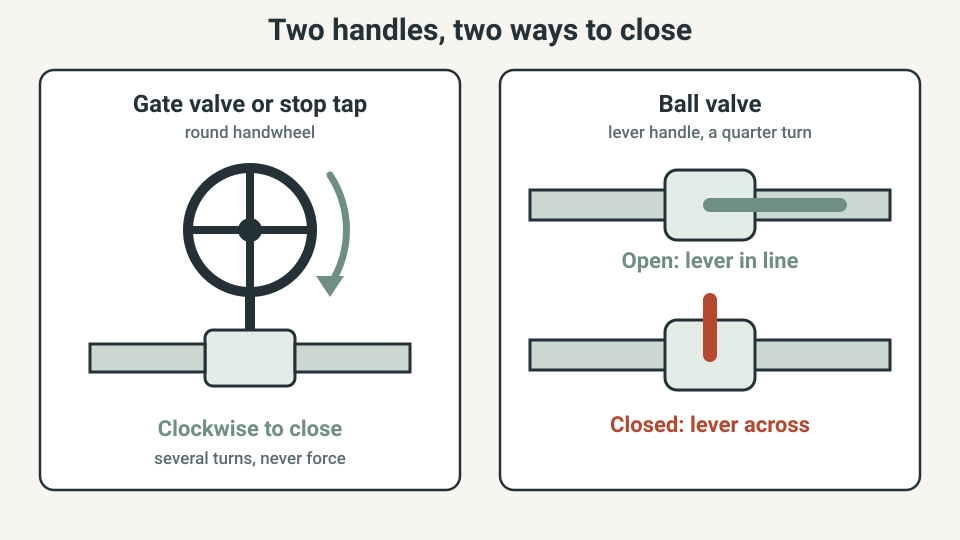
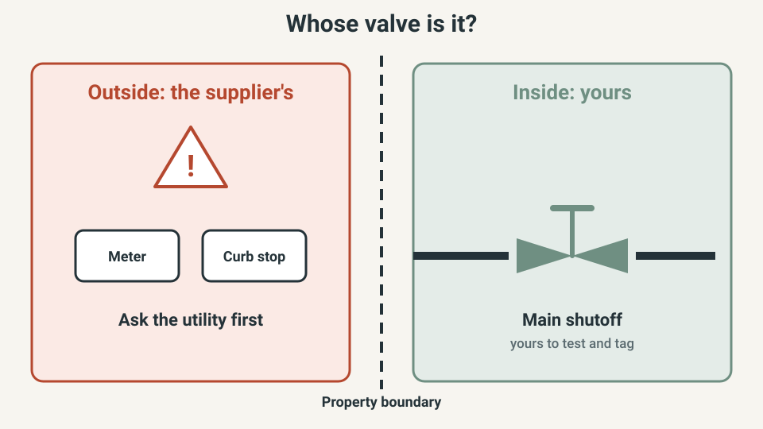

WEEKEND PROJECTS · WATER SHUTOFF
How to Find and Operate Your Main Water Shutoff

Most people learn where their main water shutoff is when water is already in the wrong place. That is a bad time to go looking. This guide covers finding the valve, telling a gate valve from a ball valve, testing it safely and labelling it. It uses US wording (main shutoff valve) and UK wording (stop tap, stopcock). For the first minutes of an actual leak, read our leak guide. I am not a plumber.
The quick answer
- Find where the water pipe enters the building. The main shutoff is usually close to that point, or close to the water meter.
- US: check the basement, under the kitchen sink, near the meter box or at the pressure regulator. UK: start under the kitchen sink, then the other cupboards and service spaces listed below.
- Handwheel: turn it clockwise to close. Lever: a quarter turn, until it sits across the pipe.
- Hand pressure only. If it does not move easily, stop. Do not force it.
- Check a tap after closing to prove it is the right valve, then reopen it fully.
- Tag it and show everyone in the household.
- Leave outside valves (curb stop, UK external stop tap, meter pit) to the water supplier unless it says you may use them.
Quick plan
| Item | Detail |
|---|---|
| Time | Allow about half an hour, once. That is my estimate, not a sourced figure |
| Cost | Free to find, test and tag; a tag or a roll of tape is the only purchase. Plumber prices vary too much to quote |
| Best for | New owners, renters, and anyone who cannot name their valve in ten seconds |
| Goal | Know where it is, know it works, and make sure everyone else knows too |
What the valve is called
In the US this is the main water shutoff valve. American Water describes it as the valve that controls all of the water coming into your house. In the UK the same job is done by the internal stop tap, also called a stop valve or stopcock. WaterSafe says it looks like a tap with no spout, or a lever, sitting between two lengths of pipe.
Do not confuse it with the small valves under sinks and behind toilets, which stop one fixture only. And do not confuse it with the valves outside, in the street or at the meter. Those can belong to the water supplier, and I cover them further down.
Where the main shutoff usually sits
One rule works almost everywhere: find where the water pipe enters the building, then look for a valve on that pipe close to that point.

US homes. American Water says the valve is normally near the water meter. If the meter is outside, find the place where the service line enters the building, and the valve is likely to be close by. Its list of common spots is the basement, under the kitchen sink, near the meter box and at the pressure regulator. Illinois American Water adds that the valve is usually where the pipe enters the home, or on a vertical pipe rising from that point inside a basement wall or crawl space. That is one utility's description, so treat a crawl space as a place to check, not a promise. Not every US home has a basement or an indoor meter.
UK homes. WaterSafe says the internal stop tap is usually under the kitchen sink. It also lists a kitchen cupboard, a downstairs bathroom or toilet, a garage or utility room, a cellar and the space under the stairs. A second WaterSafe page adds an airing cupboard and under the floorboards near the front door.
How to find yours, step by step
- Start at the meter or the entry point. If the meter is outside, go indoors to the nearest wall and look for where the pipe comes in: a basement wall, a utility cupboard, a garage or a crawl space wall.
- Look for a valve fitted straight onto that pipe. It will have either a round handwheel or a lever handle. In the UK it may look like a tap without a spout.
- Check the usual rooms from the US and UK lists above.
- Do not stop at the first valve you see. A valve on a pipe that serves one sink or one toilet is a fixture valve. The main valve controls the whole supply, and the test below proves which one you have.
- Ask around. A previous owner, your landlord or building manager, or a neighbour in a similar home may know. These are my suggestions, not sourced steps.
- Still nothing? A plumber can find the internal valve. Your water supplier can tell you where its own outside valve is.
Gate valve or ball valve: how each one turns
Two kinds of handle cover most homes.

Handwheel (gate valve or UK screw-down stop tap). American Water says gate valves are generally closed by turning the handle clockwise. WaterSafe says the same for a UK stop tap: clockwise closes it, anticlockwise opens it. These take several full turns, so keep going slowly until you feel it stop, and do not crank on it after that.
Lever (ball valve). American Water says a ball valve generally needs only a quarter turn to close, leaving the handle perpendicular to the water line. WaterSafe describes the same thing for a UK plastic external stop tap: lever in line with the pipe is on, lever across the pipe is off.
A quarter turn is how a ball valve moves, not a third valve type. The quick way to tell the two apart is the handle: a wheel that spins is gate-style, and a lever that swings across the pipe is a ball valve. Both sources say "generally", so watch what your own valve does and stop if it feels wrong.
Safety rules before you touch any valve
- Hand pressure only. WaterSafe and American Water both say not to force a valve. I would add: no wrench, pliers, extension pipe or cheater bar on the handle.
- Stay dry. Do not stand in water or touch wet sockets, switches or appliances. WaterSafe says that if water has leaked near your electrics you should not touch them and should switch them off at the fuse box. Do that only from a dry position; our leak guide covers the order.
- Warn the household. The water is about to go off, and anyone in the shower will notice.
- Leave outside valves alone unless your water supplier says you may use them.
How to test it without damaging it
Do this on a calm day, not in the middle of a leak.
- Tell the household and pick a time when nobody is showering or running the dishwasher or washing machine.
- Look before you touch. If the valve or pipe is corroded, damp or dripping, do not test it. Call a plumber.
- Close it slowly by hand. Clockwise for a handwheel, a quarter turn for a lever.
- Check a tap. American Water says to check sinks and other fixtures to make sure you have found the main valve and that it works. WaterSafe says it can take a few minutes for the water to stop altogether, so give it time. If water keeps running freely, either this is not the main valve or it is not sealing. A plumber should look at it.
- Reopen it slowly, all the way, and check that water comes back at the tap.
- Leave it in its resting position. WaterSafe says lever-type valves should be left fully open, and screw-down stop taps turned back half a turn after fully opening, to prevent seizing. American Water says to open a valve fully and then close it a quarter turn. For handwheel valves the two sources differ on how far to back off, so follow your valve's own instructions if you have them.
If the valve will not move easily, will not stop the water, or starts to leak, stop there and call a plumber.
How often to test it
WaterSafe recommends gently turning a UK internal stop tap off and on again every six months, and suggests the clock changes as a reminder. In the US, American Water's guide says to consider operating the main valve and the individual fixture valves annually. Neither figure is a legal requirement, and I did not find one standard that covers both countries.
I would pick six months, because the clock-change habit is easy to keep. Use the same test, and check the fixture valves under sinks and behind toilets while you are there.
What to do if it is stuck
Stop. American Water says that if a valve does not turn easily you should not force it, or it might break, and that you may want to have it repaired so it works when you need it. WaterSafe says over-tightening or using excessive force can damage a stop tap, and that a plumber should deal with one that will not turn or will not shut off.
I did not find a source I trust for freeing a stuck main valve at home, so I am not going to give you a method. A seized valve is better replaced on your schedule than broken in the middle of a leak. If water is already escaping and the valve will not close, call a plumber and your water supplier straight away, and follow our leak guide.
What to do if it leaks around the handle
Treat it as a job for a plumber. I did not find a source I trust for tightening or repacking a leaking valve at home, and a wrong guess on the one valve you rely on in an emergency is a bad trade. Stop using the valve, put a towel or small bucket under a slow drip, and book a plumber. If it is more than a drip, it is a leak, so use our leak guide.
Inside the home this is your plumbing and your repair. Illinois American Water, for example, says the plumbing in your home is the customer's responsibility. A leak at an outside valve or the meter is different: call the supplier.
Outside valves: leave these to the utility
The valves outside the house are where ownership gets confusing, and it differs by country and by utility.

UK. WaterSafe says the external stop tap belongs to your local water supplier. You may need permission to use it even in an emergency, and permission to turn it back on. Not all suppliers give permission, and if you cause damage you may be liable for repairs. It is often near the property boundary under a small cover about the size of a CD case, and with a water meter it is generally in the same chamber. On a shared supply, closing it cuts off your neighbours too. Many covers are in the pavement or road, so watch for traffic and do not leave one open as a trip hazard. Some need a special key.
US. It depends on the utility. Illinois American Water says the meter is its property, that only its personnel may open the meter pit, and that tampering with the meter is unlawful. Iowa American Water says it owns the curb stop in some districts, while in its Quad Cities district customers own the curb stop and maintain it. So the safe rule is simple: do not open a meter pit, and do not operate a curb stop, until your utility tells you whether it is yours and whether you may use it. This is not legal advice, only a reason to ask before you reach for a key.
Label it and tell the household
American Water supplies a tear-out tag with its leak kit for the main valve, and says everyone in the home should know where the valve is and how to turn it off. You can do the same with a plain tag. The extras below are my additions.
- Write MAIN WATER SHUTOFF (US) or STOP TAP (UK) in large letters and hang it on the valve without covering the handle.
- Add an arrow for the closing direction only after you have tested which way yours closes.
- Photograph the valve and its surroundings and keep the photo with your home notes.
- Add your plumber's phone number to the tag.
- Show every adult and older child how to close it, in person.
- If you rent, tell your landlord or building manager that you tagged it.
Then test the label: ask someone who has never seen the valve to find it.
When to call a plumber or the water utility
Call a plumber when:
- You cannot find or identify the internal valve.
- The valve is stiff, stuck, damaged, or does not stop the water.
- Water leaks around the handle, the valve body or the connected pipe.
- The valve needs repair or replacement.
Call the water utility or supplier when:
- You cannot locate or identify the outside valve, curb stop or meter. WaterSafe says to contact the supplier if you cannot find the external stop tap or your plumber cannot operate it.
- An outside valve, meter or meter chamber is damaged or leaking.
- You are not sure whether an outside valve is yours to use.
For an emergency leak, start with our leak guide. For cold-weather prevention, see our frozen pipes guide. Once you know where your valve is, leak sensors are the next layer.
Frequently asked questions
Is the main water shutoff the same as the water meter valve?
Not necessarily. The meter measures use, and the utility often owns it and the valves around it. The main shutoff is the valve inside your home that controls the whole supply. Illinois American Water, for example, says the meter is its property and that only its personnel may open the meter pit. Ask your own utility who owns what.
Which way do I turn the main water shutoff?
Clockwise to close a handwheel valve, whether it is a US gate valve or a UK screw-down stop tap. A lever-handle ball valve closes with a quarter turn, leaving the lever across the pipe. Both American Water and WaterSafe say "generally", so watch what your own valve does and never force it.
Should the main valve be left open or closed?
Open, for everyday use. WaterSafe says lever-type valves should be left fully open and screw-down stop taps should be turned back half a turn after fully opening, to stop them seizing. American Water says to open a valve fully and then close it a quarter turn for the same reason.
How often should I test it?
WaterSafe recommends every six months for a UK internal stop tap, and suggests the clock changes as a reminder. American Water suggests considering annual operation of the main and fixture valves. Neither is a legal requirement.
Can I turn off the valve at the street or in the meter pit?
Do not assume you may. In the UK the external stop tap belongs to the water supplier, and you may need permission to use it even in an emergency. In the US it depends on the utility: some own the curb stop and restrict meter-pit access, and in some districts customers own the curb stop. Ask first.
What if I cannot find my main shutoff at all?
Work from the meter or the point where the pipe enters the building, check the usual places listed above, and ask a previous owner, your landlord or a neighbour. If you still cannot find it, a plumber can locate it, and your water supplier can tell you where its own outside valve is.
Keep going
- What to do first when you discover a water leak
- How to protect pipes from freezing and respond to a burst pipe
- Where to place water leak sensors around your home
Sources and further reading
- WaterSafe Register, locating your internal stop tap (UK): watersafe.org.uk stop tap location
- WaterSafe Register, turning off your water, internal and external stop taps (UK): watersafe.org.uk turning off the water
- WaterSafe Register, check your stop tap every six months (UK): watersafe.org.uk stop tap check
- WaterSafe Register, burst pipe steps including electrics (UK): watersafe.org.uk burst pipe advice
- American Water, water leak detection kit, shut-off valve section (US): American Water leak detection kit (PDF)
- American Water, leak detection tips, gate and ball valves (US): American Water leak detection tips (PDF)
- Illinois American Water, customer rights and responsibilities (US): Illinois American Water guide (PDF)
- Iowa American Water, rights and responsibilities (US): Iowa American Water responsibilities
Last reviewed: November 24, 2026. Who owns outside valves differs by utility and country, so ask yours. The testing interval differs between the UK (six months) and one US utility (annually), and I did not find a single standard. I did not find a source I trust for freeing a stuck valve or tightening a leaking handle at home, so this guide sends you to a plumber for both.